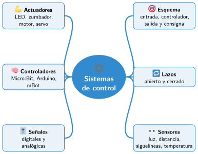

Bloque III · Arquitectura de un robot
UD08 Sistemas de control: sensores, actuadores y controladores
Sesiones
- Sesión 8.1 Qué es un sistema de control
- Sesión 8.2 Control en lazo abierto y en lazo cerrado
- Sesión 8.3 Sensores
- Sesión 8.4 Actuadores
- Sesión 8.5 Controladores: Micro:Bit, Arduino y la placa del mBot
- Sesión 8.6 Señales digitales y analógicas
Al terminar la unidad
- 🛠️ Práctica con las herramientas
- 📝 Repaso de la unidad
- ✅ Autoevaluación
- 🎯 Situaciones de aprendizaje del bloque
Mapa mental de la unidad

✏️ Repasa la unidad con el mapa: tapa una rama y explica en voz alta lo que pone.